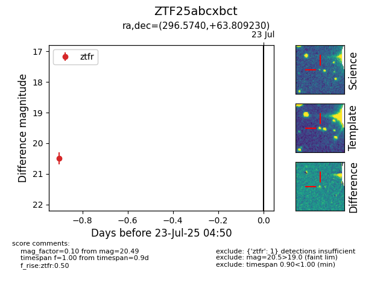

Target ZTF25abcxbct at 2025-07-23 12:37, see:
FINK: fink-portal.org/ZTF25abcxbct
Lasair: lasair-ztf.lsst.ac.uk/objects/ZTF25abcxbct
ALeRCE: alerce.online/object/ZTF25abcxbct
alt names
ZTF25abcxbct (ztf,fink)
coordinates:
equatorial (ra, dec) = (296.5740,+63.80923)
galactic (l, b) = (96.0636,+18.42360)
photometry
last ztfr=20.49
1 ztfr detections
